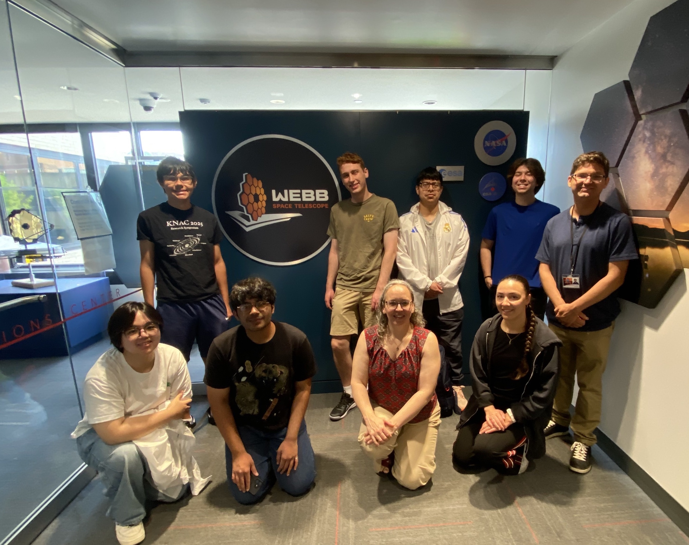
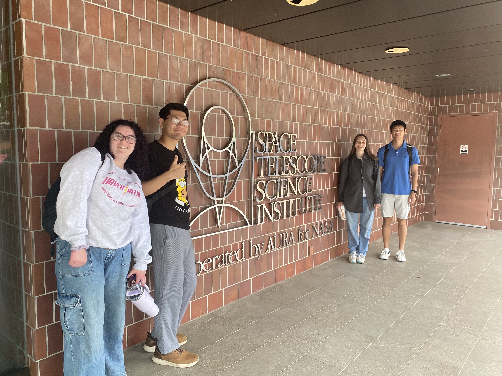
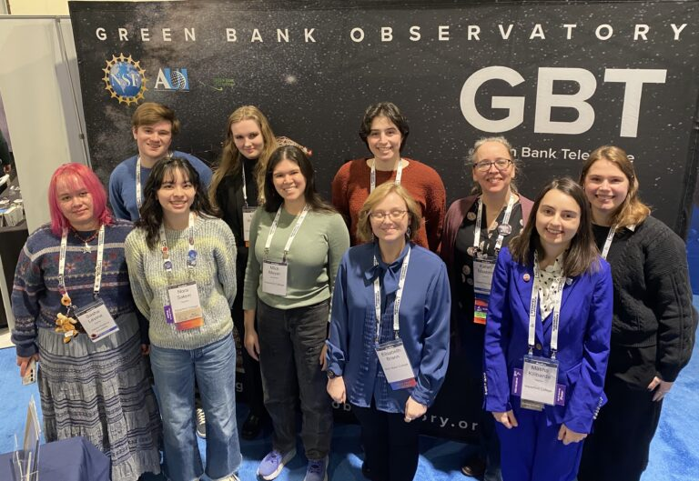
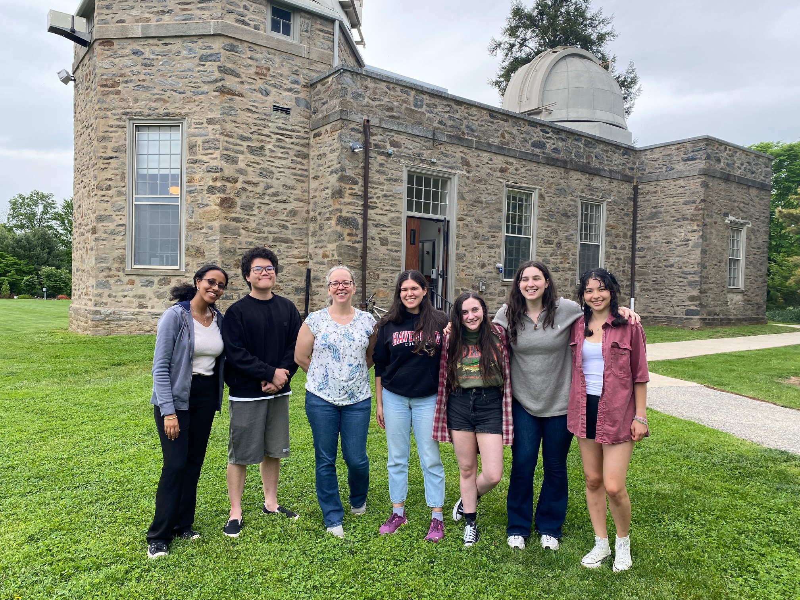
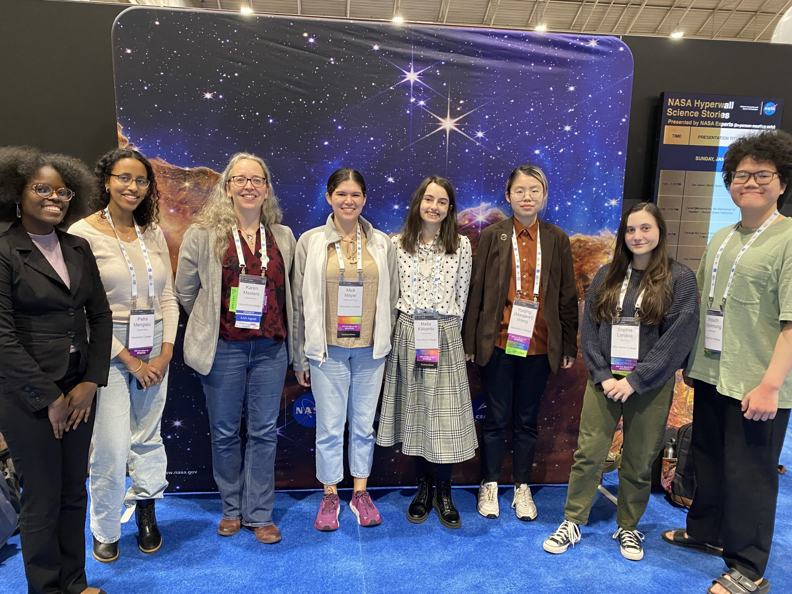
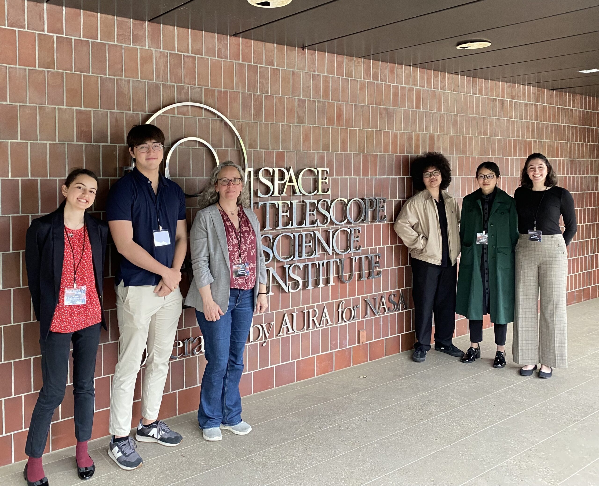
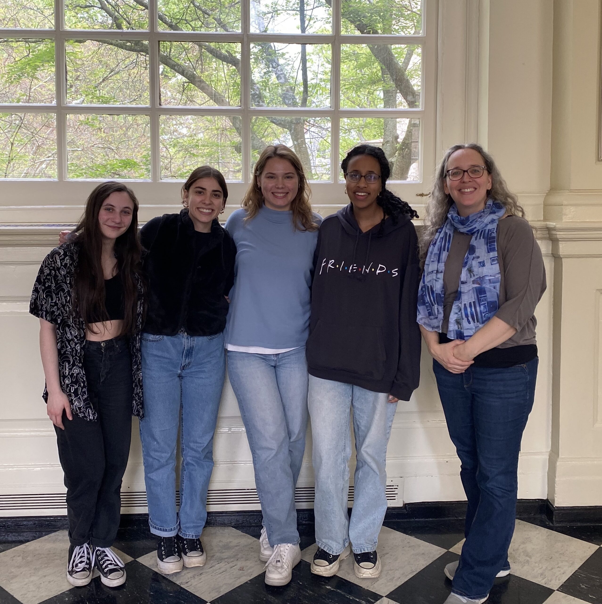
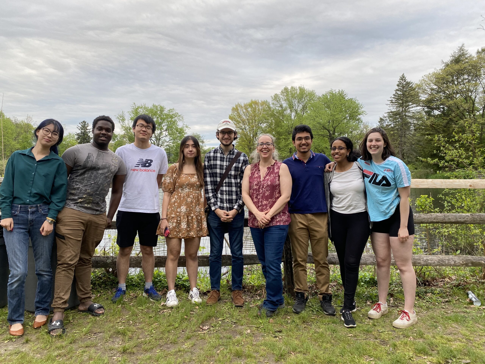

Research
If you are a student looking for Resources for Research in the Haverford Galaxy group. Look here. This is a great place to get started if you are wondering how getting involved in research in the group works.
If you are a postdoc looking for opportunities to work at a small liberal arts college (SLAC), where you can be really hands on working with undergraduate researchers (and me!) I'd love to talk with you. Please reach out by email. Haverford is eligible as a host institution for various fellowships, including NASA Hubble Fellowships, NSF ASCEND , NSF Astronomy and Astrophysics Postdoc Fellows and probably more.
 Members of the group (and friends) visiting the JWST Control Room in Baltimore in Summer 2026. From left to right: Back row: Timoth Leon '28, Oscar Turner '29, Angel Huitzel Huitzel '27, Nick D'Antonio '28, Dave Stark (STScI); Front row: Lucy Fang, JHU '29, Dhruv Patel, , JHU '27, KLM, Kelly Sanderson (Haverford) |
 Members of the group visiting STScI in Baltimore in Summer 2025. From left to right: Lauren Kochurek '27, Adam Marcello '28, Christie Burnside Vassar '25 and Matt Tie '28 |
If you are a Haverford or Bryn Mawr student interested in trying out some research in this research group, please reach out by email, or our Department Slack. If I don't respond after a week try again. I will work with students with any level of research background and am usually happy to do 0.5 credit research classes during the semester. I typically take 2-5 students (depending on funding and other considerations) each summer. I am usually unable to take on interns or students from outside of Haverford/Bryn Mawr.
 Members of the group (and friends) at the Green Bank Observatory Exhibit at the American Astronomical Society Meeting in National Harbor, MD in January 2025. Back row: Luke Smithberg '25, Max Worchel '25, Tessa Pearlstein '25, KLM, Emmy Wisz BMC '23. Front row: Sasha Levin, Nora Salem '26, Narisara Mayer '25, Elizabeth Brann BMC'26, Masa Kilibarda '26 |
 Members of the group in Spring 2024 at the end of semester party outside the Strawbridge Observatory on campus. From left to right Petra Mengistu '24, Indy Srijumnong '24, Karen Masters, Narisara Mayer '25, Sophia Lanava '24, Emma Martignoni '24, Nora Salem '26. |
My research concerns galaxies in the Universe. I tend to work with large samples (thousands, or 100s of thousands) of galaxies where you can see visible internal structures. I have been most interested lately in what structures correlate with star formation - either active, or dying off, as well as the potential for future star formation (traced by the atomic hydrogen gas which can be observed in radio wavelengths).
Our group works a lot with data from the MaNGA survey of SDSS-IV, as well as classifications from Galaxy Zoo. We are working on a neutral hydrogen (HI) followup program of MaNGA galaxies (HI-MaNGA), observing them with the Green Bank Radio Telescope.
We recently obtained funding from NSF (for HI-MaNGA related work) and NASA (for Galaxy Zoo related work).
My Publications:
- List of my papers from the Astrophysics Data System (ADS)
- You can access most of my papers from the open source Arxiv.org (that link is a search on my name)
- Direct link to IAU373 Proceedings on Galaxy Zoo 3D: Identifying Bars, Spirals and Foreground Stars in MaNGA Galaxy Data (Arxiv rejected to host this for being “not substantive or complete, in part due to the brevity of the submission”, so I posted it here instead)
- My PhD thesis,Galaxy Flows in and Around the Local Supercluster (Cornell, 2005) (LINK TO FIX: PDF download)
- Online Posters
- AAS245 (Jan 2025): The Latest from Galaxy Zoo
- IAU GA 2024 (Aug 2024): HI-MaNGA: (21cm-HI) single-dish observations of MaNGA Survey Galaxies
- IAU GA 2024 (Aug 2024): Update on Activities of The US National Academies' Committee on Radio Frequencies (CORF);
- AAS243 (Jan 2024): HI-MaNGA: Results from GBT (21cm-HI) observations of MaNGA Survey Galaxies
- AAS240: Quantifying the Poor Purity and Completeness of Morphological Samples Selected by Galaxy Colour (based on paper co-first authored with Becky Smethurst).
- AAS237: Galaxy Zoo 3D: Crowdsourcing the identification of internal structure in MaNGA galaxies.
- A selection of recorded Research Talks may be found in theMy Astronomy Talks playlist of my Youtube Channel (many, but not all of these are aimed at a public audience)
Undergraduate Student Research
Authentic, cutting edge undergraduate student research is central to the ethos of the Haverford student experience. Since joining Haverford in 2018 I have worked with 42 different BiCo students (57% from under-represented genders; 35% BIPOC), either through summer projects, or academic year projects (for credit, or paid). I worked with 17 students on Haverford senior theses, and to date 15 students I worked with have gone on to PhD programs in astronomy or related subjects. To date 10 students have been lead authors on either RNAAS articles, or peer-reviewed publications, with many others as co-authors on these or other papers (numbers correct as of Jan 2025).
Student first-author papers:
- Mengistu, Masters, Geron, Smethurst, Lintott & Simmons 2026, MNRAS 548. 19 "The effects of bar strength and kinematics on galaxy evolution ─ II. The global and local impacts of slow-strong bars" (a followup to Geron et al. 2024)
- Pearlstein, Masters & Geron 2025, RNAAS 9, 236"Measuring Bar and Spiral Arm Pattern Speeds in MaNGA Barred Spiral Galaxies"
- Wisz, Masters et al. 2025 ApJ 983, 17 "The Impact of Bars, Spirals and Bulge-Size on Gas-Phase Metallicity Gradients in MaNGA Galaxies"
- Garland, Masters & Grin 2024 MNRAS 535, 1338"Using H I observations of low-mass galaxies to test ultralight axion dark matter"
- Salem, Masters et al. 2024, RNAAS 8, 188 "Finding Passive Galaxies in H i-MaNGA: The Impact of Star Formation Rate Indicator"
- Mengistu & Masters 2023, RNAAS 7, 35 "Mass and Color Dependence of the Hubble Spiral Sequence"
- Sharma, Masters et al. 2023, MNRAS 526, 1573 “H I-rich but low star formation galaxies in MaNGA: physical properties and comparison to control samples”
- Goddy, Stark, Masters et al. 2023, MNRAS 520, 5895 “A comparison of the baryonic Tully–Fisher relation in MaNGA and IllustrisTNG”
- Yang & Masters 2022 RNAAS 6, 10, “How Bar Fraction Depends on Baryon Fraction”
- Shapiro, Stark, Masters, Hess and APERTIF Team 2022, RNAAS 6, 1, “Testing Algorithms for Identifying Source Confusion in the HI-MaNGA Survey”
- Frank, Stark, Masters et al. 2022 MNRAS 519, 3312. “The H I content of red geyser galaxies”
- Goddy, Stark & Masters 2020 RNAAS, 4, 3. “L-band Calibration of the Green Bank Telescope from 2016–2019″
- Otter, Masters et al. 2020 MNRAS 429, 2722, “Galactic Conformity in both Star-formation and Morphological Properties”
Summary of Student Projects
- Oscar Turner '29 spent summer 2026 as a Kovaric Fellow in the group, working on a project related to understanding quenching in galaxies by indentifying cLIERs, eLIERs and outLIERs using MaNGA data.
- Caroline Teel '29 spent the spring 2025 semester starting a project to investigate the HI content of red spiral galaxies by identifying different red spiral selections in the MaNGA sample, and then spent summer 2025 working with Tobias Geron in Toronto on comparisons of Galaxy Zoo bar identifications with other techniques.
- Shahd Abdalla '28 spent summer 2026 looking at different ways to identifying mergers in MaNGA sample galaxies, using either Galaxy Zoo, or other techniques
- Nick D'Antonio '28 spent summer 2026 investigating the neutral hydroegn content of merging galaxies based on Galaxy Zoo DESI, and with HI data from ALFALFA
- Matt Tie '28 spent summer 2025, and 4 weeks in summer 2026 working on HI data of galaxies and helping with repairs to our Small Radio Telescope. They spent the rest of summer 2026 at the CIERA REU.
- Alexis Carroll '28 spend the spring 2026 semester working on a project to attempt to ID the most massive spiral galaxy in the local Universe using GZ:DESI data. They spent summer 2026 in MN on our NASA EGIP grant working with Galaxy Zoo: Tidal Tails classifications (based on Euclid public imaging)
- Adam Marcello '28 spent summer 2025 working on constraining the HI content of Milky Way Analog galaxies, which we are writing up as a RNAAS. In Summer 2026 they worked in Dan Grin's cosmology group.
- Grace Hannigan '27 spent summer 2026 working on a NASA funded project to investigate spiral galaxies at high redshifts in the Galaxy Zoo: CEERs data set.
- Angel Huitzel Huitzel '27 spent summer 2026 funded by our NSF grant to investigate the percent of data lost to the GPS signal across the 10 years of our HI-MaNGA 21cm line observations at Green Bank Observatory.
- Lauren Kocurek '27 spent summer 2025 working on measuring the distribution of galaxy morphologies in the local universe from the Galaxy Zoo DESI data set.
- Patrick Wang '27 Patrick worked in the group Summer 2024 with a project on the properties of flocculent and grand design spirals (using the sample identified by Ben Bergerson'24), which they presented at the 2024 KNAC Meeting. Patrick spent Summer 2025 in Minnesota working with collaborators on a NASA Euclid Guest Investigator grant on merging galaxies in Galaxy Zoo: Euclid and summer 2026 at Queens University in Canada working on projects related to HI in galaxies.
- Grace Nasrallah '27 spent Summer 2024 working a project on the HI content of spirals with differing arm winding, which they presented at the 2024 KNAC Meeting. They spent summer 2025 as an intern at Yerkes Observatory, and summer 2026 at the University of Arizona Mirror lab.
- Elisabeth Brann '26 (BMC) joined the group in Fall 2024 working on a project testing predictions for the HI content of galaxies against our own measurements in the HI-MaNGA project. She completed a senior thesis "From HI to H2: Connecting Gas Fractions and Optical Line Diagnostics in the HI-MaNGA Survey"
- Harrison West '26 joined the group in Fall 2024 picking up a project started by Indy Srijumnong on the HI content on galaxies with kinematically misaligned gas and stellar discs. He continued this for his senior thesis "Global Gas Asymmetry and Kinematic Misalignment in HI-MaNGA Galaxies" and we hope to complete a RNAAS based on the work.
- Masha Killibarda '26 Masha started work in Summer 2023 on a project investigating spiral arms in MaNGA data (with help from Galaxy Zoo 3D). She developed tools to measure the arm-interarm mass difference in large samples of spirals. She presented this work at AAS243 in Jan 2024 (iPoster link) and we are writing it up for publication. Masha spent summer 2024 as a CIERA student at Northwestern, and summer 2025 in Oxford working with Tom Williams on PHANGS data of galaxies with spiral arms to measure pattern speeds. Masha used the PHANGS work for her senior thesis, and started a PhD at McMaster in Fall 2026.
- Nora Salem '26 Nora started research in the group in Fall 2023 on a project looking at different measures of global star formation rate for MaNGA galaxies, and how it would impact the selection of HI rich but low SF galaxies. This was inspired by referee comments on student-led paper, Sharma, Masters et al. 2023, MNRAS 526, 1573 in our group, which studied HI rich but low SF galaxies. Nora's work was published as Salem et al. 2024, RNAAS. Nora spent summer 2024 as an NRAO REU at Charlottesville measuring magnetic field strengths in an HII region in our Galaxy (AAS245, Jan 2025 iPoster on summer 2024 work), and Summer 2025 at Villanova working with Dylan Pare on VLA imaging of the galactic center, which she is continuing for senior thesis. She started a PhD at McGill in Fall 2026
- Ishan Deb '26 I worked with Ishan as off campus reader for his senior thesis on the topic of measuring the sizes of galactic outflows in HST data (based on summer 2025 project at UCSB with Crystal Martin's group).
- Yunjing (Margaret) Wang '26 Margaret started work in Summer 2023 on a project investigating how the properties of spiral arms depend on galaxy dark matter fraction. This project continues alongside ways to use Galaxy Zoo classifications to identify flocculent, multi-arm and grand design spirals. (AAS243 in Jan 2024 iPoster on this work), and we are writing it up for publication. Margaret spent summer 2024 in Switzerland on a project studying dark matter as a particle, and compelted their senior thesis in Dan Grin's cosmology group at Haverford.
- Manolya Yatman '26 (BMC) joined the group in Fall 2024 with a project starting to look at the properties of ringed galaxies in MaNGA data. She was a KNAC summer intern ay Colgate in Summer 2025 working on a project related to characterizing little red dots in JWST images. She remained a friend of the group working on her senior thesis on the LRD project (with Cosmin Ilie and Dan Grin).
- Tessa Pearlstein '25 Joined the group in Summer 2024 with a project attempting to measuring pattern speeds of spirals in MaNGA. Presented summer work at the Fall 2024 KNAC Undergraduate Research Symposium, and are continue to work on this for Senior Thesis. They also did a AAS245 iPoster on. Published as Pearlstein, Masters & Geron 2025, RNAAS 9, 236 "Measuring Bar and Spiral Arm Pattern Speeds in MaNGA Barred Spiral Galaxies." Tessa was also a satellite member of the group Summer 2023, working on a project with Dr. Steve Goldman on TP-AGB stars in M33. Following Haverford, Tessa did Masters in Aerospace Engineering at JHU (2025-2026) and now works at Vertiq, an aerospace company based in the Philly area.
- Mick Mayer '25 Mick joined the group as a first-year in Spring/Summer 2022 and continued throughout their time at Haverford, working on various projects. Mick started a PhD in Astronomy at UCSB in Fall 2025. Mick's first project was investigating the properties of very unbarred spiral galaxies. They presented this work at the 2022 KNAC Undergraduate Research Symposium and wrote a paper for the Proceedings. They then worked for a while on a project to develop methods to use citizen science to classify ionization mechanisms as measured by MaNGA data. They spent summer 2023 at the Carnegie SURF program studying emission line spectra of protoplanetary discs (their AAS243 iPoster on this). Finally, they researched measures of stellar metallicity in MaNGA galaxy data spending Summer 2024 and used this as the basis on for their Senior Thesis (their AAS245 iPoster on this).
- Petra Mengistu '24 Petra started research in Summer 2021, and part-time in Summer 2022 investigating how spiral arm winding measurements correlate with galaxy bulge size in various samples. Petra presented this as a KNAC 2021 Poster and a AAS240 poster and it is now published Mengistu & Masters 2023, RNAAS 7, 35. They spent Summer 2023 at Oxford University working on a project related to quenching of bars using MaNGA data, which she wrote up for publication (Mengistu et al. 2026, MNRAS 548. 19 "The effects of bar strength and kinematics on galaxy evolution ─ II. The global and local impacts of slow-strong bars") and was the basis of her Senior thesis (and presented as a Chambliss Award Winning AAS243 iPoster). Petra started a PhD at UCSC in Fall 2024, working with Brandt Robertson.
- Ben Bergerson '24 – Ben joined the group in Fall 2023 to start a senior thesis project looking at training Zoobot (Walmsley et al. 2022) to distinguish between flocculent and grand design spirals. Ben was a student in the 4+1 program doing a 1-year Systems Engineering MEng at UPenn. Haverford “What They Learned” featuring Ben.
- Will Flanders '24 – Will started research Summer 2023 on a collaborative project with Prof. Dan Grin and myself investigating the use of HI velocity functions from HI surveys to test axion dark matter models. He continued this work for his Senior Thesis. Will was a student in the 4+1 program doing a 1-year Mechanical Engineering MEng at UPenn.
- Sophia Lanava BMC '24 – Sophia joined the group in Fall 2022, contributing to HI-MaNGA data reduction, and working on a project investigating the HI content of MaNGA galaxies with evidence for ionised gas outflows. This was the basis for her senior thesis. She also spent summer 2023 at the Carnegie SURF program studying debris disks around stars (their AAS243 iPoster on this from Jan 2024).
- Indy Srijumnong '24 – Indy joined the group in Fall 2022 working on a project investigating the HI content of MaNGA galaxies with evidence for counter-rotation, or other star-gas kinematic misalignment (AAS243 iPoster on this). For his senior thesis, Indy is using our on campus 16″ telescope, with a slitless spectrometer to investigate how well we can measure astronomical spectra. Indy started a PhD in Optics at the University of Central Florida in Fall 2024.
- Emma Martignoni '24 – Emma started research in the group in Summer 2022. She worked on plans for a Zooniverse project to classify MaNGA kinematic maps. Summer 2023 she did research in Australia with Barbara Catinella developing code to measure star formation rates from IFU data. In the summer she used MAUVE data and for Senior Thesis work, she applied this to MaNGA data. Emma completed an MSc in Mechanical Engineering at Drexel in Summer 2026.
- Hedy Goodman '23 – Hedy joined our group in Summer 2022 and looked into modelling radial profiles of HI in galaxies using a combination of HI-MaNGA and MaNGA data. She moved on to a Senior Thesis on Observatory Design and Building. After graduation she worked as a Physics teacher at a private school and a science writer, before starting a Masters Program in Optics/Telescope Design in Fall 2025.
- Emmy Wisz BMC '23 – Emmy has been working on how spiral arms drive radial flows with Kate Daniel and BMC (AAS240 poster on this) and starting Summer 2022 continuing for her Senior Thesis is investigating ways to probe the impacts of this observationally with MaNGA data. She presented this work at the 2022 KNAC Undergraduate Research Symposium, wrote a paper for the Proceedings and an AAAS245 iPoster. The paper on this work, Wisz, Masters et al. 2025 should be published soon. Emmy was a Maria Mitchell postbac researcher in 2023-2024 and started a PhD with Gillian Wilson at UC Merced in Fall 2024.
- Rachel Langgin BMC '23 – Rachel spent Summer 2021, Spring 2022 working on measuring bar lengths from Galaxy Zoo: 3D analysis. Rachel's KNAC 2021 Poster on this work. She spent Summer 2022 as a KNAC REU student with Eilat Gilkman at Middlebury College and is working on her Senior Thesis based on this project (on observations of a quasar with HST) with me as her on-campus supervisor. Rachel started a PhD at ULV in Fall 2023.
- Anubhav Sharma '23 – Anubhav (a CS major) spent time working in my group in the Winter of 2019/2020, Spring, Summer and Fall of 2020 and Spring 2022 working on HI data reduction and investigating interesting HI rich galaxies with low star formation rates. This work was presented as a AAS poster, and published in MNRAS (Sharma, Masters et al. 2023, MNRAS 526, 1573). Anubhav is now working on software in industry in Chicago.
- Kwame Bennett '25 – Kwame did research in the group in Summer 2022. He investigated ringged galaxies found by Galaxy Zoo in the MaNGA data. He presented this work as a poster at the 2022 KNAC Undergraduate Research Symposium and wrote an abstract for the Proceedings.
- Xingyun Yang '24 – Yang worked on research in the group in Spring 2022 investigating how bar fractions depend on baryon fractions in disc galaxies. He wrote up this work for a RNAAS paper, Yang & Masters 2022, and moved on to work in Dan Grin's group. Yang started a PhD at Arizona in Fall 2024.
- JT Turner '24 – JT was primarily supervised by Dr. Dave Stark in Summer 2021 to investigate if there are any patterns in the time or sky location of GPS L3 signal (at 1381 MHz) interfering with our HI 21cm line observations from Green Bank (a galaxy with a redshift of about cz = 8000 km/s emits 21cm line emission at this same frequency). JT's KNAC 2021 Poster on this work. JT did Senior Thesis work with Islam Khan, and went on to a job as a data analyst.
- Miranda Kong BMC '22 – Miranda joined the group in Fall 2020, working on projects using MaNGA data to trace galaxy kinematics with the goal of contributing to efforts to parameterize velocity fields in MaNGA data using the Radon Transform. See Miranda's KNAC 2021 Poster on this work. For her Senior Thesis ‘Non-circular Bar Flow Linked to AGN in MaNGA Galaxies', Miranda investigated how this could be used to quantify inflow rates along bars which might contribute to feeding supermassive black holes (or AGN) in galaxies. She presented this work as a AAS240 poster. She worked as a research assistant at Caltech for a year, before starting a PhD in Fall 2023 at UHawaii.
- James Garland '22 – James spent Summer and Fall 2020 looking at the prospects for detecting the signature of axion dark matter in HI galaxy surveys (collaborative project with Prof. Dan Grin). This work was presented as a AAS237 Poster, and published as Garland, Masters & Grin 2024 MNRAS 535, 1338. In Summer 2021 he added a project using Galaxy Zoo to investigate tidal triggering of bars, which he presented as a talk at the KNAC 2021 Meeting, continued for Senior Thesis work: ‘The Interplay of Tides, Bars, and Star Formation in Disk Galaxies' and presented as a AAS240 poster for which James was awarded an Honorable Mention in the Chambliss Competition. James spent a year working as a Research Assistant at CUNY/AMNH (2022-2023) before starting graduate school in astrophysics in Toronto in Fall 2023.
- Autumn Winch, BMC '22 – Autumn spent Spring 2020 looking at data in the Large Magellanic Cloud as prep work for the SDSS-V survey “Local Volume Mapper“. She continues to join group meetings as she worked on projects supervised by astronomers outside of Haverford (Summer 2020: STScI REU; Fall 2020: Dr Joshua Lothringer, JHU, Summer 2021: Princeton NAC Program). I was the on campus supervisor for her Senior Thesis work with Joshua Lothringer ‘Measuring Atmospheric Escape in Ultra-Hot Jupiter WASP-178b with the Hubble Space Telescope'. Autumn went on to a Pre-Med Post Bac program at JHU.
- Shufan Xia '21 – I was the on campus supervisor for Shufan's Senior Thesis, led by Dr. Zhao Li at SHAO, in which Shufan used Oorts constants based on Gaia data to constrain the rotation of the Milky Way. Shufan talked about this on the “What They Learned” blog, and went on to do a Masters in Data Science.
- Shoaib Shamsi '21 – Shoaib worked in my group for most of is undergraduate career investigating how spiral arms trigger star formation, making use of MaNGA data and Galaxy Zoo: 3D working with my group since Summer 2018 and did his Senior Thesis on this topic. Our research was written up for the Haverblog, and Shoaib also presented it at the American Astronomical Society meeting in January 2021, as well as being a co-author on Masters, Krawcyzk, Shamsi et al. 2021 on Galaxy Zoo: 3D.
- Nathan Wolthuis '21 – Nathan spent time in Summer and Fall 2019 investigating barred galaxies in the MaNGA sample using Galaxy Zoo: 3D. In Winter and Summer 2020 he worked on investigation of Halpha morphology with MaNGA data. For his senior thesis work, he work with Prof. Victor Debattista on analysis a numerical simulation of a Milky Way like galaxy to investigate the impact of the bar. Nathan went on to a Masters in Astrophysics at Brown.
- Elizabeth Warrick, BMC '21 – Elizabeth has been working in our group since Fall 2019 looking at Galaxy Zoo: UKIDSS data to investigate how certain results using optical Galaxy Zoo morphologies look using morphologies from IR images. Her senior thesis for Bryn Mawr Physics was on this topic, and she also presented a AAS Poster. Elizabeth did the Drexel Masters in Physics program, with a project related to using citizen science for neutrino detection, and started a PhD at UAlabama in Fall 2023.
- Julian Goddy '21 – Julian spent summer 2019 improving the calibration of HI data for the HI-MaNGA followup program, and investigating the frequency of interference from the GPS satellites. This work was published in RNAAS: Goddy et al. 2020. Julian continued to work in our group, primarilly with Dr. Dave Stark, on using MaNGA and HI-MaNGA data to calibrate the Baryonic Tully-Fisher relation for his Senior thesis, which was presented as a AAS poster, and published as Goddy et al. 2023, MNRAS. Julian completed the Drexel Masters in Physics program, and is now working on a Physics PhD.
- Kate Gold, BMC '21 – Kate spent Spring 2020 investigating how spiral arm pitch angles and central supermassive black hole masses correlate in spiral galaxies. She continued to join group meetings as she worked on projects supervised by researchers outside of Haverford (Summer 2020 and onwards, Prof. Debbie Schmidt, F&M, which she presented at AAS) and in Fall 2021 started a PhD in AstroChemistry at Univ. Arizona.
- Karla Garcia '21 – Karla spent Summer 2020 looking at how MaNGA kinematic data on galaxies could be use to test modified gravity models proposed to explain the accelerated expansion of the Universe (collaborative project with Prof. Dan Grin).
- Emily Harrington, BMC '20 – Emily did a Senior Thesis linked to Tactile Universe, researching how to bring the project to the US education system. Emily also spent Summer 2018 investigating correlations of HI properties of galaxies to other properties, and making some figures for this paper: HI-MaNGA: HI Followup for the MaNGA Survey, which they are a co-author on.
- Sadie Kenyon-Dean '20 – I helped Sadie investigate her interest in light pollution through a senior thesis project in which she measured light pollution across the Haverford Campus. This work led to a Plenary Resolution to reduce light pollution in 2020 (pre-pandemic). Sadie now works as a Math teacher.
- Rachel Eaglin, BMC '22 – Rachel helped with HI data reduction for HI-MaNGA during the 2018/2019 school year.
- Reilly Milburn '19 – Senior Thesis – Investigation into the use of the Strawbridge Observatory 16″ Telescope for exoplanet followup. Reilly was interviewed about this for the “What They Learned” blog. Following Reilly's thesis we decided to buy a new CCD with better QE and a much wider field of view. Reilly completed a PhD in Astrophysics at the University of North Carolina at Chapel Hill.
- Justin Otter '19 – Investigation of galactic conformity in both morphology and star formation properties. This paper is now published in MNRAS: “Galactic Conformity in both Star-formation and Morphological Properties”, Otter et al. 2020. Justin completed his PhD in Astrophysics from JHU in Summer 2026.
KNAC Summer Undergraduate Students
Haverford is part of the Keck Northeast Astronomy Consortium (a group of Liberal Arts colleges in the Northeast with active astronomy research). We sometimes host students as part of the KNAC REU program, either from other KNAC locations, or who attend colleges with limited options for research experience.
- Christie Burnside, Vassar '26 spent summer 2025 in the group working on using MaNGA data to investigate if star formation efficiency varies between spiral arms and interarm regions. We are continuing to work on this for Christie's senior thesis, for Vassar, and will submit it for publication.
- Jessica Washington, Wellesley '22 – Jessica spent the summer 2021 working on making model HI profiles for galaxies with MaNGA rotation curves, which she presented as a talk at the KNAC 2021 Meeting. She is currently in the Masters program at Brown.
- Griffin Shapiro, Middlebury '22 – Griffin was primarily supervised by Dr. Dave Stark in the summer 2021 working on calibrating the confusion estimates for HI-MaNGA observations, which he presented as a talk at the KNAC 2021 Meeting, and published as Shapiro, Stark, Masters, Hess and APERTIF Team 2022, RNAAS 6, 1.
- Emily Frank, Vassar '21 – Frank was primarily supervised by Dr. Dave Stark in the summer of 2020 to investigate the HI content of red geyser galaxies. This work was published in MNRAS as Frank, Stark et al. 2022.
- Wilbur Dominguez, Swarthmore '21 – Wilbur was primarily supervised by Dr. Dave Stark in the summer of 2020 to make mock observations of the HI asymmetry of galaxies in the Illustris simulation. He is now in the PhD program at the University of New Mexico.
- Patricia Fofie, Williams '21 – Fofie spent the summer of 2019 investigating the HI asymmetry of galaxies. She went on to work as a Data Analyst at the Large Millimeter Telescope, UMass, and started a PhD at the University of California, Irvine in Fall 2022.
- Sean Dillon, Chico State College '20 – Sean spent the summer of 2019 investigating what correlates with the HI content of galaxies by running a Principle Component Analysis. Sean is now in the PhD program at University of Texas at San Antonio, working with Dr. Angela Speck on radiative transfer modeling of stars.
- Daniel Finnegan, Siena College '19 – Daniel spent the summer of 2018 checking if foreground stars identified by Galaxy Zoo: 3D users had stellar spectra. They all do if at least 3 users identify them as a star. This work was published in the Masters et al. 2021 paper on Galaxy Zoo: 3D.
PhD Supervision. While Haverford is undergraduate only, I still find opportunities to work with PhD students. During my time as Faculty at Portsmouth University I was the first supervisor for three PhD students (all of whom now work in data science jobs). As an affiliate faculty of the University of Alabama Graduate School I help as an external committee member. I also currently remotely supervise a PhD student at the University of Malaya.
- Danial Ahmad Ariffin Lee (University of Malaya) in collaboration with Prof. Zamri from the University of Malaya, Danial is working on the HI-MaNGA project for his PhD work.
- Peter Gwartney (UAlabama) I am an external committee member for Peter.
- Keerthana Jegatheesan (Universidad Diego Portales, PhD 2024) – I'm an external committee member for Keerthana's PhD “Tracing the formation histories of spiral and elliptical galaxies with Integral Field Spectroscopy” (supervisor: Evelyn Johnson)
- Kavya Mukundan (UAlabama PhD 2023) – as an affiliate faculty of the University of Alabama graduate school I was an external committee member for Kavya's PhD “Understanding Galaxy Evolution in the Local Universe: Investigating Barred Galaxies and Advancing Automated Galaxy Morphology Techniques” (supervisor: Preethi Nair).
- Wenhao Li (UAlabama PhD 2023) – as an affiliate faculty of the University of Alabama graduate school I was an external committee member for Wenhao's PhD work, “A Multi-wavelength study of post-merger remnants: the relation between AGN, Mergers and Star formation Quenching” (supervisor: Preethi Nair)
- Tim Lingard (Portsmouth PhD 2020) – Tim's Google Faculty Research Award funded PhD which started while I was faculty at the University of Portsmouth is focused on developing a novel interface for The Zooniverse which will allow in-browser fitting of galaxy light profiles. Two papers came out of this work (Lingard et al. 2020a, Lingard et al. 2021). Tim spent a couple of years working for 1715labs as a Data Analyst, and now works for “Faculty” as a Data Consultant.
- Lucy Newnham(Portsmouth PhD 2019) Lucy's PhD, which started while I was faculty at the University of Portsmouth focused on an interesting sample of very strongly barred *and* gas rich galaxies something we found to be very unusual (Masters et al. 2012). Lucy has been obtaining resolved HI data for this sample, which we are calling the HIRBS (HI Rich Barred galaxy Survey). A paper from this work is available as Newnham et al. 2019. Lucy spent a year as a visiting scholar at Haverford College (2018/2019). Lucy now works as a Data Scientist for Deductive.
- Tom Melvin (Portsmouth PhD 2016) Tom's PhD, done while I was faculty at the University of Portsmouth, used data from Galaxy Zoo: Hubble to study the redshift evolution of the bar fraction in spiral galaxies (Melvin et al. 2014). Tom now works as an Insurance Data Analyst.
Postdoctoral Researchers
During my career I have had the pleasure of working with the following researchers as postdoctoral, or fixed term research staff:
- Kelly Sanderson, Haverford College (April 2026-). Kelly joined us at Haverford thanks to our NASA Roman Wide Field Science project "Getting Started with Roman Galaxy Zoo"
- Dave Stark Haverford College (Sept 2019-2021). Dave remained at Haverford as a Visiting Professor in 2021/2022 while he also worked as a (remote) postdoctoral research at the University of Washington. In January 2022 he started a new job as a Staff Astronomer at STScI.
- Coleman Krawczyk Portsmouth (2015-2018; Zooniverse Developer/Data Analysis) Coleman remained at Portsmouth after I left in 2018, and we remain connected via the Zooniverse.
- Samantha Penny Portsmouth (2014-2018; now a Senior Teaching Fellow in Portsmouth)
- Nicolas Bonne – Portsmouth (2014-2018; now Ogden Isaac Fellow, and Tactile Universe Lead in Portsmouth)
Older Group Photos
 Galaxy Group and friends at the AAS Meeting in New Orleans in January 2024. From left to right: Woodkensia Charles '24, Petra Mengistu '24, KLM, Narisara Mayer '25, Masa Killibarda'26, Margaret Wang '25, Sophia Lanava BMC '24, Indy Srijumnong '24. |
 The Summer 2023 group at the Space Telescope Science Institute for a workshop on the Nancy Roman Space Telescope. From left to right Masha Killibarda'26, Will Flanders'24, me, Indy Srijumnong'24, Margaret Wang'26 and Tessa Pearlstein'25. |
 Members of the group in Spring 2023. From left to right Sophia Lanava BMC'25, Rachel Langgin BMC'23, Emmy Wisz BMC'23, Petra Mengistu '24 and me. |
 An image of some of the group at the May 2022 Physics and Astronomy Department Picnic. From left to right: Miranda Kong BMC '22, Kwame Bennett '25, Xingyun Yang '24, Autumn Winch BMC '22, James Garland '22, Karen Masters, Anubhav Sharma '23, Petra Mengistu '24, Emma Martignoni '24. |
|
|